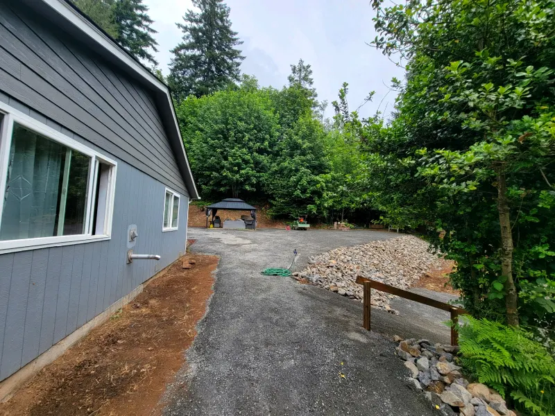
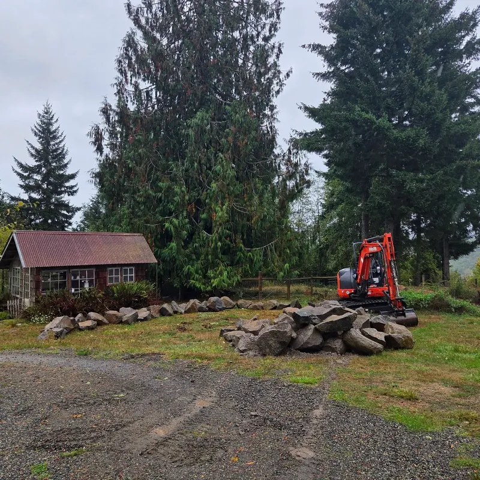
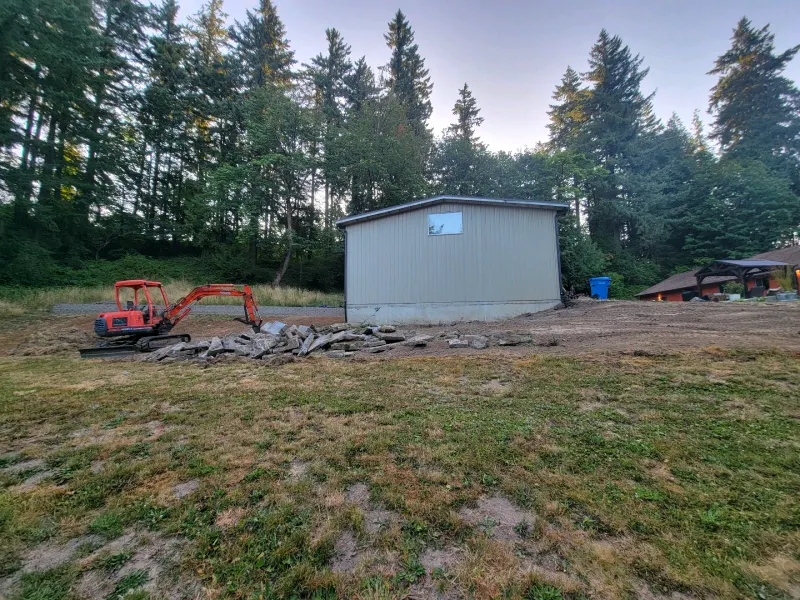

Kelso, WA · Cowlitz County & Southwest Washington
Excavation & Site Preparation in Kelso and Southwest Washington
Foundations, grading, land clearing, driveways, concrete and retaining walls, handled by a local crew that does the groundwork right so everything built on top of it lasts.
- WA L&I registered contractor #BRYNIE*751B3
- Based in Kelso, serving SW Washington
- 100% recommend on Facebook (7 reviews)
Services
Groundwork for homes, shops and rural property
From the first dig to the final grade, one crew is responsible for the base your project sits on.
Excavation Services
Foundation and footing digs, basements, utility trenches and backfill for homes, shops and additions.

Site Prep Services
Turn raw or overgrown ground into a clean, graded, build-ready site for your contractor.

Grading Services
Rough and finish grading for pads, driveways, yards and drainage correction.
Land Clearing Services
Brush, small trees, stumps and debris removed so the ground is ready to work.

Driveway Repair
Regrading, rebuilding base, fixing potholes, washouts and drainage on gravel and paved driveways.

Concrete Flatwork & Asphalt Paving
Patios, slabs, pads and driveways, with the excavation and base prep done by the same crew.

Retaining Wall Installation
Boulder, block and stone retaining walls built on a proper base with drainage behind them.

Pole Barn Site Prep
Ground prep for pole barns: clearing, pad grading, rock base and drainage. Your builder builds the barn.
Recent projects
Real work from the Brynion crew
Photos shared by Brynion Excavation on its website and Facebook page. No stock photography.


About Brynion Excavation
A Kelso crew that cares about what's underneath
Brynion Excavation is a locally owned excavation and site-prep company based in Kelso, Washington. Owner Taylor Clark and crew work with homeowners, builders and property owners across Cowlitz County and Southwest Washington on the parts of a project most people never see: the cut, the base, the compaction and the drainage.
Customers mention the same things again and again: clear communication, clean job sites and work that matches what was promised.
Why Brynion
What you can expect working with us
Groundwork done right
Base prep, compaction and drainage built for the wet Southwest Washington climate, not just what looks good on day one.
Clear communication
You talk with the people doing the work. Customers consistently call out how easy it is to stay in the loop.
Straightforward estimates
We look at your site, explain the options, and put the scope in writing before work begins.
Registered in Washington
Brynion Excavation LLC holds an active Washington L&I contractor registration, #BRYNIE*751B3.
How it works
From first call to finished grade
Call or send the form
Tell us about your excavation project, where the property is and when you would like to start. Photos help.
Site visit and estimate
We look at access, soil, slope and drainage, talk through options and give you a clear written estimate.
Groundwork
Utility locates, then the work itself, with the base, compaction and drainage done the way the next phase needs.
Walkthrough
We review the finished work with you and make sure the site is cleaned up and ready for what comes next.
Testimonials
What customers say
Feedback shared with Brynion Excavation. On Facebook, 100% of 7 reviewers recommend us.
I used Brynion excavation for a trench and rock wall project and was very impressed with the results. Taylor was professional, efficient, and detail-oriented. The trenching was precise, and the rock wall was built cleanly and with great craftsmanship. Communication was excellent throughout the job, and the site was left in perfect condition. Highly recommend Brynion Excavation for any excavation or other projects.
A shout out to Taylor and crew at Brynion Excavation for the excellent job they completed for us this fall!! We appreciated the constant communication and willingness to take on our project which was challenging. Completed ahead of schedule and MORE than exceeded our expectations!!! Thank You!
Contacted Brynion for a house dig out. Was blown away by the professionalism of Taylor and the work that him and his team did. 10/10 would recommend. Will be using Brynion Excavation for all my dirt work and site prep needs moving forward.
Service areas
Based in Kelso, working across Southwest Washington
Most of our work is in Cowlitz County, with regular projects in Clark and Lewis counties. Farther north toward Olympia and Lacey, call to check scheduling.
FAQ
Frequently asked questions
What services does Brynion Excavation offer?
Excavation and trenching, site preparation, grading, land clearing, pole barn site prep, driveway repair, concrete flatwork, asphalt paving, concrete repair and retaining walls (boulder, block and stone), along with the drainage work that goes with them.
Do you build pole barns?
No. We prepare the ground for pole barns: clearing, grading, compacted rock pads and drainage. Your pole barn builder handles the structure, and we coordinate the pad size and layout with them.
Are you a licensed contractor in Washington?
Yes. Brynion Excavation LLC is registered with the Washington State Department of Labor & Industries as a general construction contractor, registration #BRYNIE*751B3. You can confirm the current status on the L&I Verify a Contractor tool.
What areas do you serve?
We are based in Kelso and work across Cowlitz County and Southwest Washington, including Longview, Castle Rock, Kalama, Woodland, the Vancouver area of Clark County, and Lewis County communities such as Chehalis and Centralia. Call to confirm scheduling for projects farther out.
How do I get an estimate?
Call (360) 485-6579 or send the estimate form with your project location, the service you need and a short description. Photos help. We will follow up to talk through the project and set up a site visit if one is needed.
How long does a typical project take?
It depends on the scope, the soil and the weather. A small residential job may take a few days; larger site prep can run longer. We will give you an expected schedule with your estimate.
Do I need a permit?
Many grading, clearing, retaining wall and building-site projects need a permit from your city or county, especially larger disturbed areas, taller walls and work near streams or wetlands. We can talk through what typically applies, but the permit requirement is set by your jurisdiction.